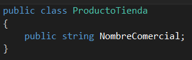
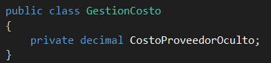
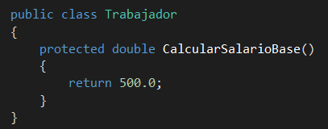
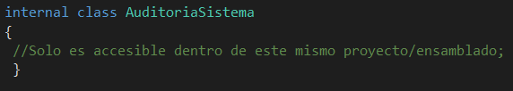

El encapsulamiento es uno de los pilares fundamentales de la programación orientada a objetos (POO). Consiste en ocultar el estado interno y los datos de un objeto, permitiendo el acceso a ellos únicamente a través de métodos o propiedades controladas.
Los modificadores de acceso son palabras clave que se utilizan para definir la visibilidad o accesibilidad de una clase, método, propiedad o variable dentro de un programa. En C# (versión 5 y otras), los principales son:
¿Qué hace? El elemento es totalmente accesible desde cualquier parte del programa, ya sea dentro de la misma clase, en clases derivadas o desde otro espacio de nombres completamente externo.
Ejemplo práctico:

¿Qué hace? Es el nivel más restrictivo. El elemento solo puede ser leído o modificado dentro de la misma clase donde fue declarado. Ninguna otra clase (ni siquiera las hijas) puede acceder a él. Es la base principal para lograr el encapsulamiento.
Ejemplo práctico:

¿Qué hace? Permite que el elemento sea accesible dentro de su misma clase y también por clases herederas (derivadas), pero permanece oculto para el resto del mundo exterior.
Ejemplo práctico:

¿Qué hace? El elemento es accesible únicamente dentro de los archivos del mismo ensamblado (proyecto o DLL), pero no desde otros proyectos externos. (Nota: Es el modificador por defecto cuando declaras una clase sin especificar nada).
Ejemplo práctico:
